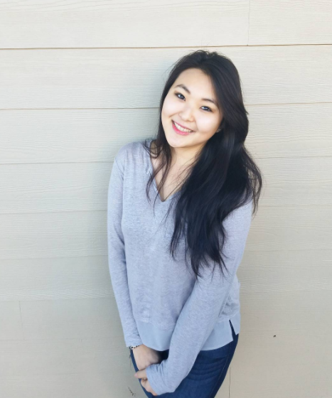

Hey! Thank you for checking out my "About Me" page! So here, I will share some information about me, my hobbies, experiences, etcetera :). Long story short, I'm a recent college grad exploring a few computer languages starting with HTML and CSS. I have a mild OBSESSION with shiba inu's and spaghetti. As shown below, I love gaming and drawing in my free-time, as well as playing the piano (not to mention, I am fluent in three languages and learned part of a fourth ( ͡° ͜ʖ ͡°)). I grew up in Oregon my entire life and recently moved to Texas in May 2017 to explore something different ☺ Check me out on Instagram!
Games
One of my most favorite things to do is to play video games! The icons above depict some of the games I play most often, but also doesn't rule out other fun games such as Killing Floor 2 and of course some occasional hardcore Sims 3... It was my enthusiasm for computer games that led me to develop an interest in computer languages!
Throughout my entire life, I thought I was destined to be a doctor of some sort...after my second year of college and some introspection, I changed my course of learning four times...(doctor->dentist->lawyer->business->computer science??) and I graduated Willamette with a Spanish degree...Totally unrelated, I know. Anywhoo, AFTER graduation, I learned that I like learning about the way computers learn. So here I am :)